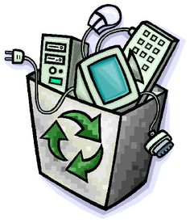

LIXO ELETRÔNICO

O que é Lixo Eletrônico?
São todos os dispositivos eletroeletrônicos, de celulares, tablets e computadores a TVs, lavadoras de louça e de roupa, geladeiras e etc., que foram descartados por seus donos.
É possível reciclar o Lixo Eletrônico?
A reciclagem de lixo eletrônico é um processo altamente viável para evitar que esses artigos gerem danos ao meio ambiente e ao solo depois de um descarte irregular em qualquer que seja o local.
Quem cuida do lixo Eletrônico no Brasil?
O recolhimento do lixo doméstico é uma obrigação das prefeituras, que tem muitas outras. “Nessa lei fica estipulado que o gerador do resíduo é o responsável pelo resíduo. Tanto da sua coleta quanto pelo tratamento e disposição final.
O que pode ser feito para reduzir o lixo eletrônico?
Reduzir:O consumo de aparelhos cresce e são trocados com mais rapidez.
Reutilizar:Os especialistas em reciclagem eletrônica recomendam que amigos ou familiares herdem os aparelhos que ainda funcionam ou que sejam vendidos em mercados de segunda mão ou reciclar
Existe algum selo verde?
O avanço não para, a Tech Trash em parceria com a Associação das Empresas Brasileiras de Tecnologia da Informação (Assespro/RJ), são as primeiras a lançarem o 1º Selo Verde do Brasil focado em lixo eletrônico.
Quais são os impactos do lixo eletrônico no meio ambiente?
Ao descartar incorretamente o lixo eletrônico, os impactos ambientais causados são a contaminação do solo, dos rios e dos lençóis freáticos. Isso coloca em risco a fauna, a flora e a saúde pública, que acaba sendo contaminada também pela cadeia alimentar.
Feito por: Ana Paula Porto Ramos
ir